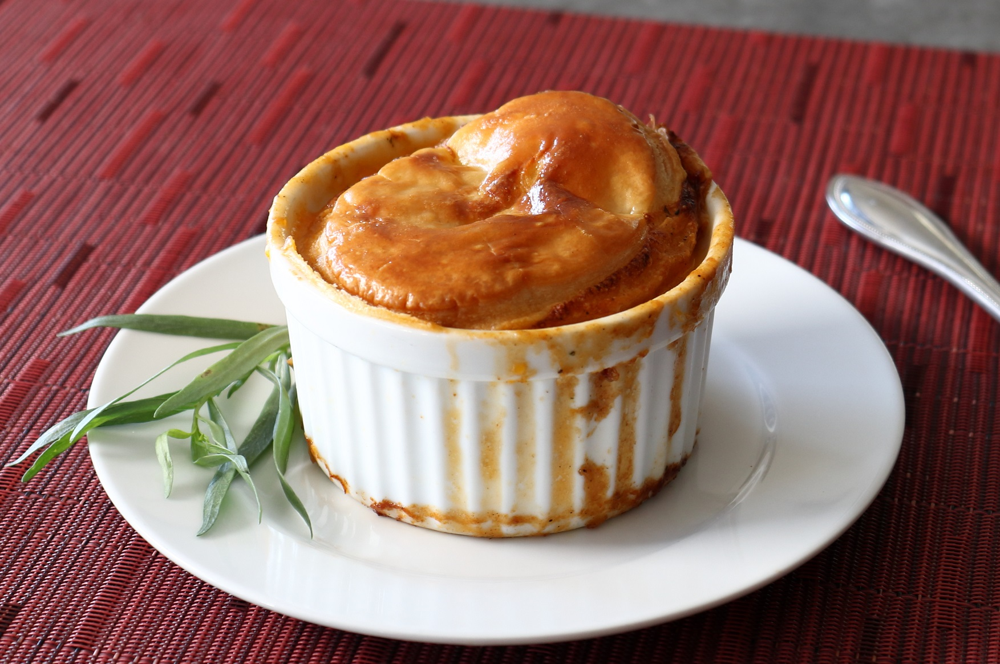

Mini Lobtser Pot Pies

Description
Good things come in small packages! And while maybe not authentic because they're made with puff pastry instead of pie crust, these mini lobster pot pies are loaded with tons of lobster flavor, thanks to an easy homemade lobster broth. They make a perfect meal for two (think Valentine's Day!) when served with a Caesar salad.
Ingredients
- 1 (5 ounce) lobster tail
- 2 tablespoons butter, divided
- 1 tablespoon sherry
- 1 (8 ounce) bottle clam juice
- ¼ cup diced celery
Steps
- Cut lobster shell down the middle, crack it open, and pull out the meat. Cut the shell into 1-inch pieces and set aside.
- Cut the meat into ½-inch pieces, checking carefully and removing any veins or missed pieces of shell. Transfer the meat to a plate and keep in the refrigerator until needed.
- Melt 1 tablespoon butter in a saucepan over medium heat. Add lobster shells and cook, stirring often, until they turn brick red, 3 to 4 minutes. Stir in sherry and clam juice and reduce heat to low. Simmer gently to steep lobster shells, 15 to 20 minutes; making sure the liquid does not reduce.
- Remove from the heat and pour broth through a strainer to remove shells.
- Rinse out the saucepan and add remaining 1 tablespoon butter. Place over medium heat to melt. Add carrots, celery, paprika, tomato paste, salt, pepper, and cayenne. Cook and stir until tomato paste is toasted and paprika is fragrant, about 2 minutes. Stir in flour and cook for 1 to 2 minutes. Stir in lobster broth and bring to a simmer.
- Add potatoes and reduce heat to medium-low. Cook at a gentle simmer until potatoes are tender and liquid has reduced just slightly, 10 to 15 minutes.